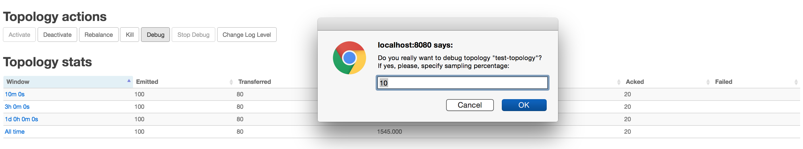
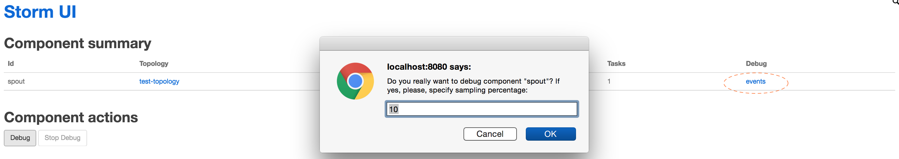
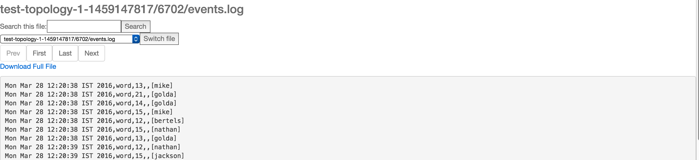
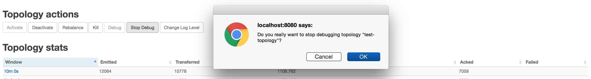

Topology event inspector provides the ability to view the tuples as it flows through different stages in a storm topology. This could be useful for inspecting the tuples emitted at a spout or a bolt in the topology pipeline while the topology is running, without stopping or redeploying the topology. The normal flow of tuples from the spouts to the bolts is not affected by turning on event logging.
Note: Event logging needs to be enabled first by setting the storm config "topology.eventlogger.executors" to a non zero value. Please see the Configuration section for more details.
Events can be logged by clicking the "Debug" button under the topology actions in the topology view. This logs the tuples from all the spouts and bolts in a topology at the specified sampling percentage.

Figure 1: Enable event logging at topology level.
You could also enable event logging at a specific spout or bolt level by going to the corresponding component page and clicking "Debug" under component actions.

Figure 2: Enable event logging at component level.
The Storm "logviewer" should be running for viewing the logged tuples. If not already running log viewer can be started by running the "bin/storm logviewer" command from the storm installation directory. For viewing the tuples, go to the specific spout or bolt component page from storm UI and click on the "events" link under the component summary (as highlighted in Figure 2 above).
This would open up a view like below where you can navigate between different pages and view the logged tuples.

Figure 3: Viewing the logged events.
Each line in the event log contains an entry corresponding to a tuple emitted from a specific spout/bolt in a comma separated format.
Timestamp, Component name, Component task-id, MessageId (in case of anchoring), List of emitted values
Event logging can be disabled at a specific component or at the topology level by clicking the "Stop Debug" under the topology or component actions in the Storm UI.

Figure 4: Disable event logging at topology level.
Eventlogging works by sending the events (tuples) from each component to an internal eventlogger bolt. By default Storm does not start any event logger tasks, but this can be easily changed by setting the below parameter while running your topology (by setting it in storm.yaml or passing options via command line).
| Parameter | Meaning |
|---|---|
| "topology.eventlogger.executors": 0 | No event logger tasks are created (default). |
| "topology.eventlogger.executors": 1 | One event logger task for the topology. |
| "topology.eventlogger.executors": nil | One event logger task per worker. |
Storm provides an IEventLogger interface which is used by the event logger bolt to log the events.
/**
* EventLogger interface for logging the event info to a sink like log file or db
* for inspecting the events via UI for debugging.
*/
public interface IEventLogger {
/**
* Invoked during eventlogger bolt prepare.
*/
void prepare(Map stormConf, Map<String, Object> arguments, TopologyContext context);
/**
* Invoked when the {@link EventLoggerBolt} receives a tuple from the spouts or bolts that has event logging enabled.
*
* @param e the event
*/
void log(EventInfo e);
/**
* Invoked when the event logger bolt is cleaned up
*/
void close();
}
The default implementation for this is a FileBasedEventLogger which logs the events to an events.log file ( logs/workers-artifacts/<topology-id>/<worker-port>/events.log).
Alternate implementations of the IEventLogger interface can be added to extend the event logging functionality (say build a search index or log the events in a database etc)
If you just want to use FileBasedEventLogger but with changing the log format, you can simply implement your own by extending FileBasedEventLogger and override buildLogMessage(EventInfo) to provide log line explicitly.
To register event logger to your topology, add to your topology's configuration like:
conf.registerEventLogger(org.apache.storm.metric.FileBasedEventLogger.class);
You can refer Config#registerEventLogger and overloaded methods from javadoc.
Otherwise edit the storm.yaml config file:
topology.event.logger.register:
- class: "org.apache.storm.metric.FileBasedEventLogger"
- class: "org.mycompany.MyEventLogger"
arguments:
endpoint: "event-logger.mycompany.org"
When you implement your own event logger, arguments is passed to Map
Please keep in mind that EventLoggerBolt is just a kind of Bolt, so whole throughput of the topology will go down when registered event loggers cannot keep up handling incoming events, so you may want to take care of the Bolt like normal Bolt.
One of idea to avoid this is making your implementation of IEventLogger as non-blocking fashion.